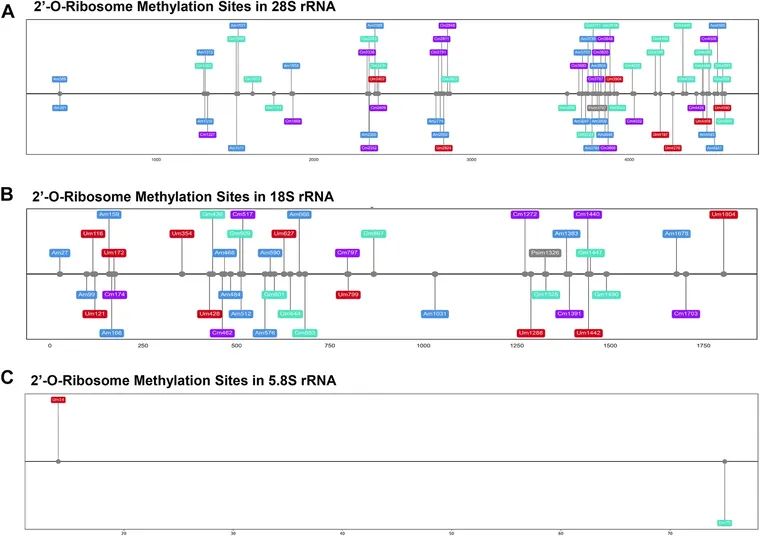

Biological psychiatry global open science ·
RiboMeth-Sequencing Reveals Selective Ribosomal RNA 2'-O-Methylation Changes in the Dorsolateral Prefrontal Cortex of Subjects With Major Depressive Disorder.
- Review
- Published in a journal Gap: Provisional wording: «published in a journal» does not prove peer review. Sofía decides what this signal is called.
- Subjects
- No data
- Notices
- No notices
✓ Verified summary
- Researchers analyzed brain tissue from 17 individuals with major depressive disorder and 20 healthy controls using RiboMeth-seq, a method that maps chemical modifications in ribosomal RNA. [1]
- The overall pattern of these modifications was largely similar between the two groups, indicating that the general structure of ribosomes was not broadly disrupted. [2]
- However, the team identified 8 specific sites on the ribosomal RNA where modification levels differed significantly between the depressed and control participants. [3]
- These findings suggest that depression is associated with targeted changes at specific ribosomal positions rather than a general breakdown, which may contribute to issues with protein production in the brain. [4]
Each sentence was checked against the study (citation, figures, names, no 8 words in a row copied) and approved by a judge from another model family. Source of this sentence: the study's abstract, which is not reproduced.

Licences
- Summary: SYNAPTICA's own text, CC BY-SA 4.0. Written by qwen/qwen3.8-27b (Groq), checked and approved by the judge openai/gpt-oss-120b (Groq).
- Metadata: PubMed (NLM).
- Original: licence unknown.
- Image: Figure 1 of the article, CC BY-NC-ND, via PMC (NLM); resized, not cropped.